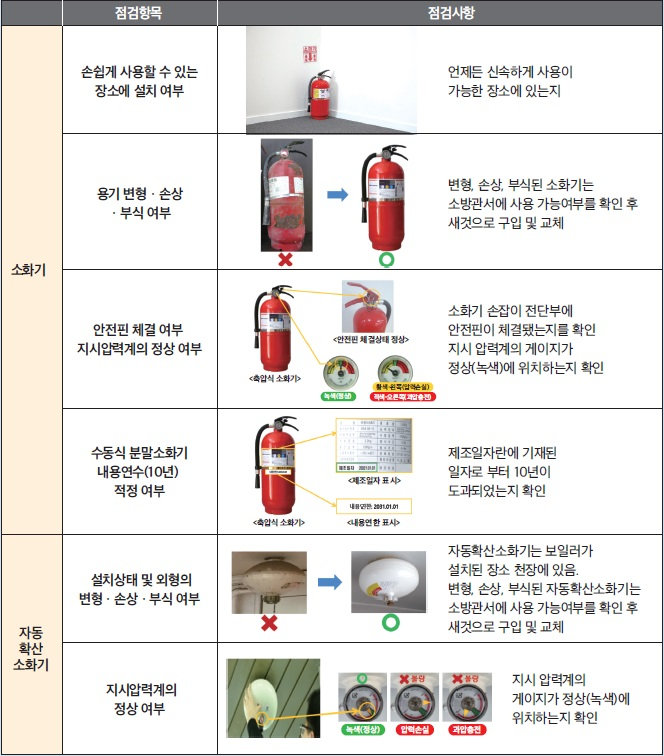
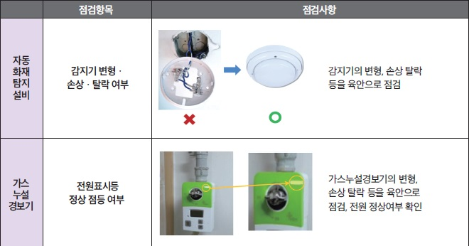

남원소방서
공동주택 세대점검
초대장
소중한 가족의 안전, 우리가 함께 만듭니다
점검 방법 학습
안전 학습 진행도0 / 4
소화설비소화기 및 자동확산소화기 점검

경보설비자동화재탐지설비 및 가스누설경보기

피난설비완강기 및 피난구용 내림식 사다리

기타설비대피공간, 경량칸막이 및 소화장치


점검 방법 학습 완료
우리 가족의 안전을 지키는
소중한 첫걸음을 마치셨습니다.
🚨 오늘 꼭 직접 확인해보세요!